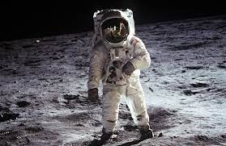

The brightest and largest object in our night sky, the Moon makes Earth a more livable planet by moderating our home planet's wobble on its axis, leading to a relatively stable climate. It also causes tides, creating a rhythm that has guided humans for thousands of years. The Moon was likely formed after a Mars-sized body collided with Earth. Earth's Moon is the fifth largest of the 200+ moons orbiting planets in our solar system.
Earth's only natural satellite is simply called "the Moon" because people didn't know other moons existed until Galileo Galilei discovered four moons orbiting Jupiter in 1610. People who were on the moon:
Neil Armstrong (Apollo 11 mission, 1969)
Edwin or "Buzz" Aldrin (Apollo 11 mission, 1969)
Charles "Pete" Conrad (Apollo 12 mission, 1969)
Alan Bean (Apollo 12 mission, 1969)
Alan Shepard (Apollo 14 mission, 1971)
Edgar Mitchell (Apollo 14 mission, 1971)
David Scott (Apollo 15 mission, 1971)
Eugene Cernan (Apollo 17 mission, 1972)
Harrison Schmitt (Apollo 17 mission, 1972)
/